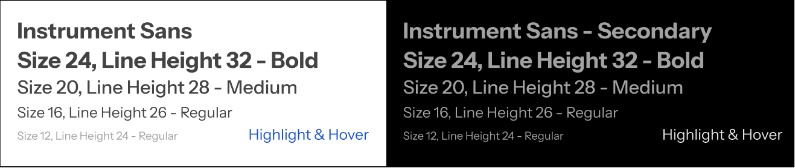
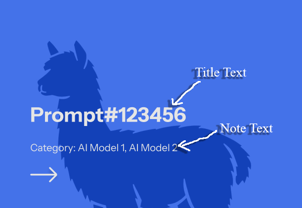
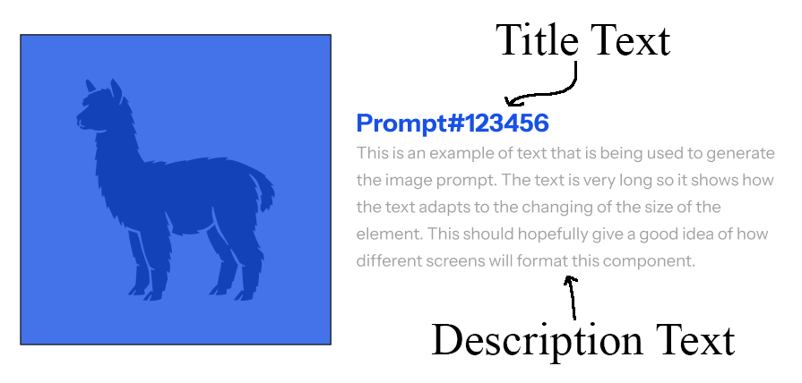

Foundation Guidelines - Typography
Best Practices & Use Cases

Title Text (class="primary-title")
Title Text, or Headers, should be used sparingly to grab user’s attention for specific elements. Headers are used to describe the contents of the website in the case of the home menu, and the contents of each page. Cards use the header font for their prompt numbers.
Headers can be used to briefly describe what a page does and to label each prompt number for the selectable images.
Subtitle Text (class="primary-subtitle")
This medium-sized font type is used most prominently for the AI model selection on the home page. Each selectable should have 16px of padding to differentiate selections. This font is also used for labeling the various AI artists and models for their respective pages.
Use the medium font only for the AI models on the home page and for labeling other cards besides the image cards.
Description Text (class="primary-description")
The description font type is used for many elements throughout the website. It is used primarily for description text contained within the search page cards, hence the name. Less apparent, it's also used in the navigation bar and drop-down menu, as well as any button labels.
Use the description font for any long-form descriptions, or as a label for a clickable item.
Note Text (class="primary-note")
The note font type appears only in specific instances, where space is at a premium and the text’s contents are not incredibly important. This font can be observed in the home page cards that list the AI models used.
Use notes on inconsequential items that still provide useful information to reduce clutter.
Highlighted Text (class="primary-title":hovered)
All text can appear with a highlighted variant. This can be triggered by hovering, like the AI model selection menu on the front page, or by having designated highlighted text, such as the Llama items in each AI prompt.
Examples:



Secondary Text Styles!
These styles are used primarily for the bottom parts of the webpage.
At times, these gray colors will be used to allow for better contrast and readability.
The same rules for each class of text still apply.
Title Text (class="secondary-title")